Show the code
hdb_a <- resale_sf %>%
select(geometry) %>%
mutate(geometry= geometry,
type = "HDB") This project aims to simplify the process of understanding amenities and facilities in the vicinity of desired HDB locations. The proposed analytical Shiny app utilizes advanced spatial point pattern analysis techniques to provide a customized view of amenities that match HDB buyers’ preferences. The project objectives include visualizing an overview of HDB flats in Singapore along with relevant amenity locations, measuring spatial association and heterogeneity, estimating HDB location intensity, assessing HDB location distribution non-randomness, and analyzing the spatial distribution of HDB flats over a street network. By empowering HDB buyers with a user-friendly application, the project seeks to assist them in making more informed decisions about their purchases and feeling more confident about their selected residence.
Many prospective HDB buyers face challenges in visualising and understanding the amenities and facilities available in the vicinity of their desired location. They often resort to manual searches on platforms like Google, which can be time-consuming and frustrating. Moreover, current mapping tools do not offer a comprehensive and tailored view of amenities specific to HDBs.
Our motivation is to simplify this process by providing a user-friendly analytical app that enables HDB buyers to view and understand the surrounding amenities easily. Our app utilizes advanced spatial point pattern analysis techniques to visualize the distribution and clustering of amenities relevant to HDB buyers. By providing a customized view of amenities that cater specifically to the needs of HDB buyers, we aim to empower HDB buyers to make more informed decisions about their purchases and feel more confident in their chosen residence.
The objective of this project is to develop an analytical application that empowers HDB buyers with the following capabilities:
Visualise an overview of HDB flats in Singapore along with relevant amenity locations, such as shopping malls, bus stops, etc. that match their preferences.
Measure the level of spatial association and heterogeneity between HDB locations and surrounding amenities using Colocation Quotients (CLQs) analysis.
Use Kernel Density Estimation (KDE) to estimate the intensity of HDB locations in different study areas of Singapore, such as Tampines and Bedok.
Assess the non-randomness of HDB location distribution in selected study areas, such as Tampines and Bedok, using F-function and Ripley’s L-function.
Apply Network Constrained Spatial Point Patterns Analysis to analyze the spatial distribution of HDB flats over a street network.
By incorporating advanced spatial point pattern analysis techniques, we aim to simplify the process for HDB buyers by providing them with a user-friendly application that visualises amenities and facilities in their desired location. Our objective is to identify significant spatial patterns and trends that can assist buyers in making informed decisions about their HDB flat purchases and feel confident about their selected residence.
In the initial stages of our project, we collected a range of datasets to analyze the spatial point patterns of HDB locations and amenities that we believe would be valuable to HDB buyers. These datasets comprise of various amenities such as MRT stations, bus stops, supermarkets, hawker centres, retail pharmacies, carparks, and more. We acquired some of these datasets online, while others were extracted using OneMap API.
Below is a table of the data sets that we will be using for our project.
| Name | Description | File Format |
|---|---|---|
| HDB Resale Flat Prices | Provides HDB addresses, blocks and street name | Data.gov.sg | .csv |
| School Directory and Information | Provides a list of primary schools in Singapore | Data.gov.sg | .csv |
| Shopping Malls | Provides a list of shopping mall and its geometry in Singapore | Web scrapped shopping mall data in 2019 by Valery Lim | .csv |
| URA Master Plan 2019 Subzone Boundary | Provides region boundary data | Referenced/taken from Prof Kam | shp |
| Bus Stops | Provides a list of bus stops and its geometry in Singapore | Datamall LTA | .shp |
| Train Station | Provides a list of MRT/LTR exits and its geometry in Singapore | Datamall LTA | .shp |
| Supermarkets | Provides a list of supermarkets in Singapore | Data.gov.sg | .geojson |
| Childcare Centres | Provides a list of names, addresses and relevant information for childcare centres in Singapore | Extracted via onemapAPI API Docs | Registration | .rds |
| Eldercare Centres | Provides a list of names, addresses and relevant information for eldercare centres in Singapore | Extracted via onemapAPI | .rds |
| Kindergartens | Provides a list of names, addresses and relevant information for kindergartens in Singapore | Extracted via onemapAPI | .rds |
| Hawker Centres | Provides a list of names, addresses and relevant information for hawker centres in Singapore | Extracted via onemapAPI | .rds |
| Healthier Hawker Centres | Provides a list of names, addresses and relevant information for healthier hawker centres in Singapore | Extracted via onemapAPI | .rds |
| National Parks | Provides a list of names, addresses and relevant information for national parks in Singapore | Extracted via onemapAPI | .rds |
| Gyms | Provides a list of names, addresses and relevant information for gyms in Singapore | Extracted via onemapAPI | .rds |
| Retail Pharmacies | Provides a list of names, addresses and relevant information for retail pharmacies in Singapore | Extracted via onemapAPI | .rds |
| Singapore Police Force (SPF) Establishments | Provides a list of names, addresses and relevant information for SPF establishments in Singapore | Extracted via onemapAPI | .rds |
| Carparks | Provides a list of names, addresses and relevant information for carparks in Singapore | Extracted via onemapAPI | .rds |
| Libraries | Provides a list of names, addresses and relevant information for libraries in Singapore | Extracted via onemapAPI | To be used as a sample dataset to test the upload dataset button in our Shiny application | .rds |
Below is the list of packages we will be using for our project:
shiny: to create the Shiny application
shinyjs: to perform JavaScript operations on the Shiny application
shinyWidget: to customise input widgets on the Shiny application
leaflet: to create interactive map on the Shiny application
bslib: to create a modern UI interface for the Shiny application using Bootstrap
rvest: to parse HTML and XML files
jsonlite: to parse and generate JSON files
dplyr: to simplify the data manipulation tasks such as filtering rows, selecting columns, grouping and summarizing data, and joining multiple datasets
sf: to import and handle geospatial data
sp: to import and handle spatial point and lines data frames
rdgal: to import geospatial data and store them as sp objects
readxl: to read and import excel files
tidyverse: to handle data wrangling (tidyr, dplyr, ggplot2, tibble)
maptools: to manipulate geographic data
data.table: to speed up the modification of data
httr: to run API requests (for getting data from onemapsg)
tmap: to plot out choropleth maps
ggplot2: to create elegant data visualisation for mapping
ggpubr: to customise ggplots for better visualisation
ggthemes: to add preset themes, geoms and scales for ggplot2
plotly: to create interactive web graphics from ggplot2 graphs
funModeling: to plot EDA with better visualisation
raster: to convert grid output to raster layer for visualisation (Kernel Density Estimation)
spatstat: to convert spatial objects to ppp format (Spatial Point Pattern plot)
olsrr: to build OLS regression models
sfdep: to find contiguous neighbours, calculate weights and perform LISAs (Local Indicator of Spatial Association)
spNetwork: to perform spatial analysis on networks. Includes network kernel density estimations as well as K function estimations for point pattern analysis on the network.
vctrs: provides a framework for working with vectors and arrays in a consistent and efficient way.
To optimize the loading speed of the application, we carefully considered the size of the HDB location dataset (i.e HDB Resale Flat Prices), as its large volume may lead to slow loading times. Consequently, we extracted the HDB locations of 5-room flat types over a one-year period from January 2022 to December 2022. We then preprocessed all the datasets by extracting relevant columns, removing missing values, and ensuring that the geometries are valid and have the correct coordinate reference system (CRS) information, specifically EPSG:3414. Afterwards, we carried out our spatial point analysis mentioned under our objectives.
Before we can perform CLQ, we need to extract the datasets to contain the type of amenity with its respective geometry without the address names of the amenities. For example, the code chunk below extracts out the geometry of the HDB locations and names it as type “HDB”.
hdb_a <- resale_sf %>%
select(geometry) %>%
mutate(geometry= geometry,
type = "HDB") To streamline the process of computing Colocation Quotients (CLQs) for multiple amenities, a function called cql_func(), which takes in the HDB extracted dataset, a sf dataframe of the amenity that has yet to be extracted and the name of the amenity, was created to extract the relevant datasets, perform the necessary computations, and save the output to an rds file. This enables easy import and visualization of the results in the Shiny app. Below are the steps of the function created:
Create the extracted dataset for the amenity
Combine HDB and Amenity dataset into a single dataframe
Prepare nearest neighbours list by using st_knn() of sfdep package to determine the k (i.e. 6) nearest neighbours for given point geometry.
Compute kernel weights by using st_kernel_weights() of sfdep package to derive a weights list by using a kernel function.
Prepare a vector list to reference the points data. For example, A list will be the HDB location points and B list will be the location points of another amenity such as Hawker Centres
Compute the LCLQ values for each point event of HDB points using local_colocation()
Join the output of local_colocation() to the previous HDB points and amenities data.frame and write it into an rds file
Below is the code chunk for the function created.
cql_func <- function(df1,df2,nameB){
df2_b <- df2 %>%
select(geometry) %>%
mutate(geometry= geometry,
type = nameB)
combined <- rbindlist(list(df1, df2_b),use.names=FALSE)
combined_sf <- st_as_sf(combined) %>%
st_transform(crs = 3414)
nb <- include_self(
st_knn(st_geometry(combined_sf), 6))
wt <- st_kernel_weights(nb,
combined_sf,
"gaussian",
adaptive = TRUE)
hdb_locations <- combined_sf %>%
filter(type == "HDB")
A <- hdb_locations$type
df2_locations <- combined_sf %>%
filter(type == nameB)
B <- df2_locations$type
LCLQ <- local_colocation(A, B, wt, nb, 99) # 100 simulations
LCLQ_stores <- cbind(combined_sf, LCLQ)
write_rds(LCLQ_stores, paste0("data/rds/clq/hdb_",nameB,".rds"))
}
When visualizing the results in the Shiny app, I filtered the data to display only the p-values that are less than 0.05. This allows users to easily identify the significant associations between HDB locations and amenities. The code chunk can be referred to below.
clq_map <- tm_shape(mpsz_sf) +
tm_polygons() +
tm_shape(result, subset = result$amenity_pvalue < 0.05) + #filter out p_value less than 0.05
tm_dots(col = amenity_name,
size = 0.01,
border.col = "black",
border.lwd = 0.5) +
tm_view(set.zoom.limits = c(11, 14))
output$clq_outputmap <- renderLeaflet(tmap_leaflet(clq_map))By looking at the LCLQ map for HDB locations and Hawker centres below, we can observe that there are not many missing values and the local colocation quotient of 0.992. This informs users that the points are isolated but significant as the local colocation quotient is less than 1 with a p-value less than 0.05. The information provided about the LCLQ map for HDB locations and Hawker centres can be useful for HDB buyers in several ways. Firstly, it suggests that there is a high likelihood that HDB flats in the area are located near hawker centres. This can be important for buyers who prioritise having access to food options and dining facilities nearby. Secondly, the fact that the local colocation quotient is close to 1 and the p-value is less than 0.05 indicates that the spatial relationship between HDB locations and hawker centres is not likely to have occurred by chance. This could be interpreted as evidence of intentional planning or zoning by the authorities, which may indicate the area has been designed to meet the needs of residents.
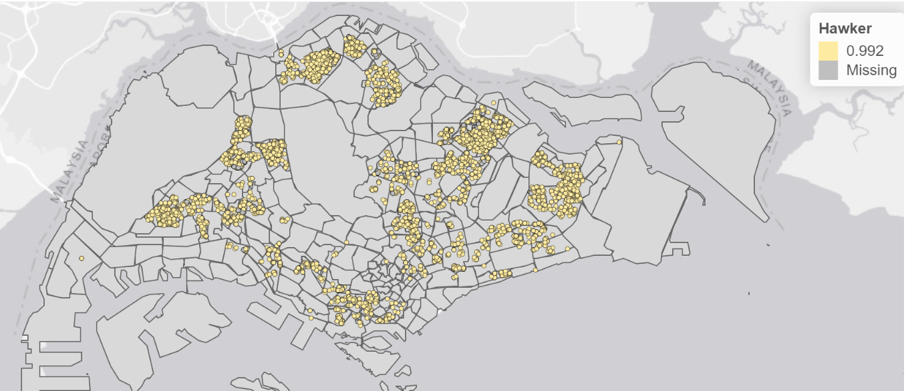
Before we can perform KDE, we need to first ensure that our sf dataframes for all the amenities type are converted into sp’s Spatial* class, then converted to the Spatial* class into generic sp format, then converted into spatstat’s ppp format and finally converted into an owin object. The code chunk below is an example of us converting the subzone and HDB dataset into an owin object.
mpsz <- as_Spatial(mpsz_sf)
mpsz_sp <- as(mpsz, "SpatialPolygons")
mpsz_owin <- as(mpsz_sp, "owin")
resale <- as_Spatial(resale_sf)
resale_sp <- as(resale, "SpatialPoints")
resale_ppp <- as(resale_sp, "ppp")
resaleSG_ppp = resale_ppp[mpsz_owin]But before we converted it into an owin, we also made sure to check for any duplicated values and dealt with it by implementing the jittering approach, which adds a small perturbation to the duplicate points so that they do not occupy the exact same space.
any(duplicated(resale_ppp))
multiplicity(resale_ppp)
sum(multiplicity(resale_ppp) > 1)
resale_ppp_jit <- rjitter(resale_ppp,
retry=TRUE,
nsim=1,
drop=TRUE)From there onwards, we rescaled the unit of measurement from metre to kilometre using the rescale() function and saved the file into an rds file so we can visualise it in our application. The code chunk below shows an example of us rescaling the spf, mrt, gyms and HDB datasets and writing it into an rds file.
spfSG_ppp.km <- rescale(spfSG_ppp, 1000, "km")
mrtSG_ppp.km <- rescale(mrtSG_ppp, 1000, "km")
gymsSG_ppp.km <- rescale(gymsSG_ppp, 1000, "km")
resaleSG_ppp.km <- rescale(resaleSG_ppp, 1000, "km")
saveRDS(spfSG_ppp.km, "data/rds/kde/spfSG_ppp.km.rds")
saveRDS(mrtSG_ppp.km, "data/rds/kde/mrtSG_ppp.km.rds")
saveRDS(gymsSG_ppp.km, "data/rds/kde/gymsSG_ppp.km.rds")
saveRDS(resaleSG_ppp.km, "data/rds/kde/hdbSG_ppp.km.rds")The following steps are taken to compute the KDE:
Read the rds file of the amenity chosen by user
Compute the KDE based on the bandwidth and kernel type selected by the user
Render the KDE plot in the application
The code chunk below shows how we can compute and plot the KDE.
index_kde <- match(input$kde_amenity, names(kde_files))
kde_name <- kde_files[index_kde]
kde_rds <- readRDS(paste0("data/rds/kde/",kde_name,".rds"))
# Calculate kernel density estimate
kde_result <- density(kde_rds,
sigma = get(input$kde_bw),
edge = TRUE,
kernel = input$kde_kernel)
# Render plot
output$kde_plot <- renderPlot({
plot(kde_result)
})Based on the KDE plot, users will be able to identify high or low concentrations of the amenity type. The lighter the color of the cluster, the higher concentration of the amenity type.
Based on the graph below, we used the spatstat package’s density() function and the Gaussian kernel with the bw.diggle() automatic bandwidth selection method to generate a kernel density estimation (KDE) plot for HDB flats. Specifically, we observed a higher concentration of HDB flats in the northeast side of Singapore compared to other regions. This information may be useful for potential buyers who prefer to live in areas with fewer HDB flats to avoid the northeast side of Singapore and focus their property search on other regions.
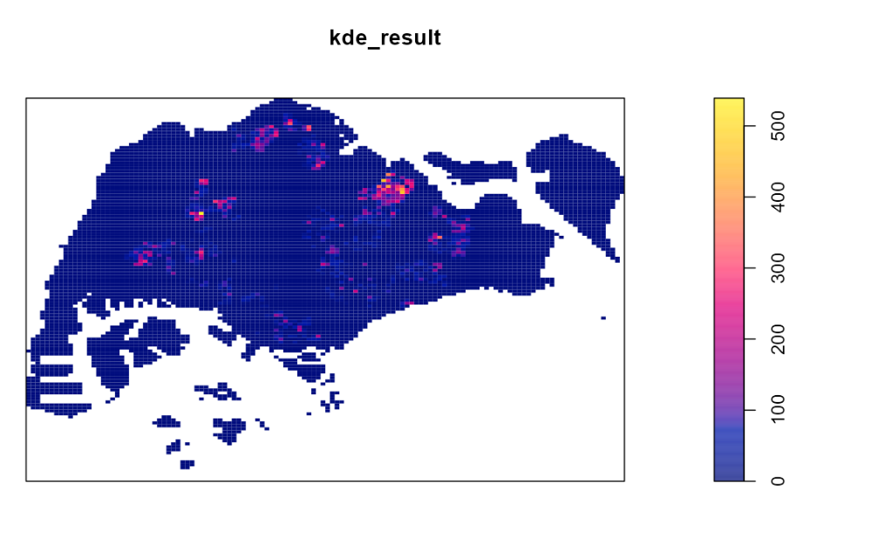
In our application, we also allow users to select the bandwidth type and kernel used to compute the KDE. This allows them to customise the type of KDE graph they would like to view.
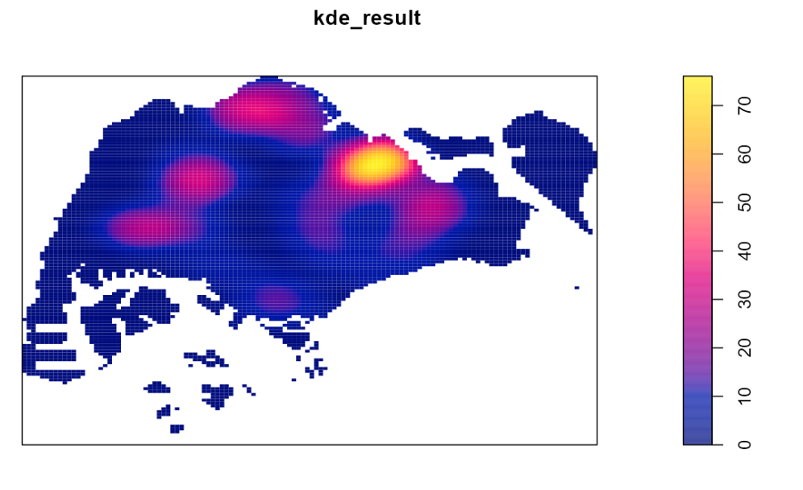
For the F-function and Ripley’s L-function, we are able to reuse the rds files for the HDB locations and subzone dataset that we have prepared for the KDE. The only difference is that we will be extracting HDB locations that are within a specific area such as Bedok, Tampines, etc. The code chunk below is an example of extracting HDB locations that are within Bedok.
bedok = mpsz[mpsz@data$PLN_AREA_N == input$ffunc,]
bedok_sp = as(bedok, "SpatialPolygons")
bedok_owin = as(bedok_sp, "owin")
resale_bedok_ppp = resale_ppp_jit[bedok_owin]Next, we can compute an estimation of the F-function and L-function, perform a complete spatial randomness(CSR) test, where the null hypothesis is that the distribution of HDB locations in the user’s chosen area is random, and the alternative hypothesis is that the distribution of HDB locations in the user’s chosen area is non-random and plot the F-function and L-function graph to visualize the results of the analysis.
The following code chunk demonstrates how we computed the estimation of the F-function and L-function. Since the F-function and L-function is based on a simulation, we set the random seed to 123 to ensure the reproducibility of the analysis. Additionally, we perform a test at a significance level of 0.05, so the value of alpha will be 0.05 and nsim(the number of simulated point patterns to be generated when computing the envelope.) will be 39.
set.seed(123)
F_bedok.csr <- envelope(resale_bedok_ppp, Fest, nsim = 39)
L_bedok.csr <- envelope(resale_bedok_ppp, Lest, nsim = 39, rank = 1, glocal=TRUE)With regards to the L-function, it is an interactive map where we referenced the code from our senior, Denise Adele Chua.
Based on the resulting plots, users will be able to observe the F-function or L-function (a solid black line) and the envelope (shaded area), which represents the range of values that would be expected under CSR test. If the observed F-function or L-function lies outside the envelope, it suggests that the data depart significantly from the CSR test, indicating either clustering or regularity in the point pattern. If the observed F-function or L-function lies inside the envelope, it suggests that the data are consistent with CSR, meaning that the pattern of the point locations is random, and no significant spatial clustering or regularity is present in the data.
Below is an example of the F-function graph of the Bedok area. We can observed that the F-function and L-function lies outside the envelope, this suggests that the HDB data depart significantly from CSR test.
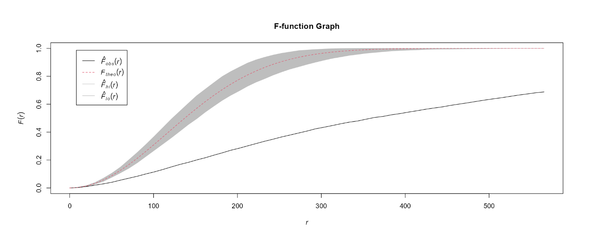
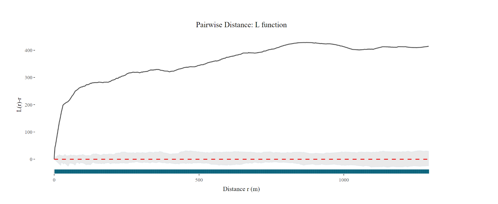
Lastly, we conducted a network constrained spatial point pattern analysis on our datasets, using the package spNetwork. We performed a network KDE as well as the K-Function analysis.
First, we split all our data sets by the planning area (“PLN_AREA_N”). This included the HDB points, facilities points, mpsz as well as the road network. There are only 30 planning areas that contain HDB points, we will only be using these 30 areas.
We split the multipolygon shapefile mpsz_sf into smaller subsets by the PLN_AREA_N (planning area name). We then saved each subset named “shape_PLN_AREA_N.rds” according to the planning area.
# splitting mpsz by PLN_AREA_N
for (x in unique(mpsz_sf$PLN_AREA_N)) {
# filter the polygons data frame to get only the polygons for the current area
area_polygons <- mpsz_sf %>%
filter(PLN_AREA_N == x) %>%
st_as_sf() # convert to sf object if necessary
# replace spaces with underscores in the area name
area_name_underscore <- gsub(" ", "_", x)
# construct the name of the output file
output_filename <- paste0("shape_", area_name_underscore, ".rds")
# save the area polygons as an RDS file
write_rds(area_polygons, file = output_filename)
}Next, we split the road networks based on the intersection of the road networks and the planning areas. We used the st_intersection() function and then saved each intersection as an rds file named “network_PLN_AREA_N.rds” according to the planning area.
grouped_polygons <- mpsz_sf %>%
group_by(PLN_AREA_N) %>%
summarize(geometry = st_combine(geometry)) %>%
st_as_sf()
intersected <- st_intersection(road_network_lines, grouped_polygons)
for (PLN_AREA_N in unique(intersected$PLN_AREA_N)) {
filtered <- intersected[intersected$PLN_AREA_N == PLN_AREA_N,]
write_rds(filtered, paste0("data/geospatial/network/network_", PLN_AREA_N, ".rds"))
}Looping through the planning areas, we first find the HDB spatial points and facility spatial points respectively in each planning area of the mpsz multipolygon using the st_intersection() function. We selected the geometry column and added a column “Point Type” labelling each row as either “HDB” or “Facility Name”. We combined the HDB and facility spatial points into a list then wrote it as a rds file named “hdb_facility_PLN_AREA_N.rds” for easy future importation.
# initialise an empty list to store the output dataframes
output_dfs <- list()
# loop over the unique area_names for each multipolygon
for (x in unique(mpsz_sf$PLN_AREA_N)) {
# subset the multipolygon dataframe by area_name
area_multipolygons <- mpsz_sf[mpsz_sf$PLN_AREA_N == x,]
# perform a spatial join between the points1 and area_multipolygons dataframes
points1_in_polygons <- st_intersection(hdb_points, area_multipolygons)
points1_in_polygons <- points1_in_polygons %>%
select(c("geometry")) %>%
mutate(`Point Type` = "HDB") %>%
relocate(`Point Type`, .before = 1)
# perform a spatial join between the facility points and area_multipolygons dataframes
points2_in_polygons <- st_intersection(facility_sf, area_multipolygons)
points2_in_polygons <- points2_in_polygons %>%
select(c("geometry")) %>%
mutate(`Point Type` = "Facility Name") %>%
relocate(`Point Type`, .before = 1)
# create a unique name for the output dataframe
output_name <- paste0("hdb_facility_", gsub(" ", "_", x))
# store the output data frames in the output_dfs list
output_dfs[[output_name]] <- bind_rows(points1_in_polygons, points2_in_polygons)
}
# write the output data frames to RDS files
for (i in seq_along(output_dfs)) {
filename <- gsub(" ", "_", names(output_dfs)[i]) # replace spaces with underscore
write_rds(output_dfs[[i]], paste0(filename, ".rds")) # save each data frame as an RDS file
}In earlier steps while splitting the HDB spatial points by the planning area, we realised that out of the 55 planning areas, only 30 planning areas include HDB spatial points. The area names are as shown below:
# area names
area_names <- c("MARINE PARADE", "BUKIT MERAH", "QUEENSTOWN","OUTRAM", "ROCHOR", "KALLANG","TANGLIN", "CLEMENTI", "BEDOK", "JURONG EAST", "GEYLANG", "BUKIT TIMAH","NOVENA", "TOA PAYOH","TUAS", "JURONG WEST","SERANGOON", "BISHAN","TAMPINES", "BUKIT BATOK","HOUGANG", "ANG MO KIO","PASIR RIS", "BUKIT PANJANG", "YISHUN", "PUNGGOL","CHOA CHU KANG", "SENGKANG","SEMBAWANG", "WOODLANDS")
area_names <- gsub(" ", "_", area_names)Since our main focus is on HDB points, we will only cover these 30 planning areas moving forward for the analysis. We took reference to “R for Geospatial Data Science and Analytics” to perform the NetKDE analysis below.
Since there are a lot of points and networks to run through the analysis, running it on loop will result in the immediate crashing of RStudio. Thus we had to go through each planning area and facility manually by editing the facility and area name ‘n’ below.
setwd("data/rds/lixel/facility")
# get data
area_name <- area_names[n]
hdb_facility <- get(paste0("hdb_facility_", area_name))
hdb_facility_points <- hdb_facility %>% select(c("geometry"))
area_network <- get(paste0("network_", area_name))
# prepare lixel objects
lixels <- lixelize_lines(area_network, 700, mindist = 350)
# generate line centre points
samples <- lines_center(lixels)
# performing NetKDE
densities <- nkde(area_network,
events = hdb_facility_points,
w = rep(1,nrow(hdb_facility_points)),
samples = samples,
kernel_name = "quartic",
bw = 100,
div= "bw",
method = "simple",
digits = 1,
tol = 1,
grid_shape = c(1,1),
max_depth = 8,
agg = 5,
sparse = TRUE,
verbose = FALSE)
# add densities to samples and lixels
samples$density <- densities
lixels$density <- densities
# rescale densities to help with mapping
samples$density <- samples$density * 1000
lixels$density <- lixels$density * 1000
# save lixel as RDS with unique name
lixel_name <- paste0("lixel_facility_", area_name, ".rds")
saveRDS(lixels, lixel_name)We saved each lixel as “lixel_facility_area_name.rds” according to the facility and area names.
Using the code below, we plotted out the road network density using the lixel generated earlier. We then plotted the HDB and facility points, colour-coding the points for easier visualisation.
tmap_mode('view')
tm_shape(shape_area_name) +
tm_polygons() +
tm_shape(lixel_facility_area_name)+
tm_lines(col="density", lwd=2)+
tm_shape(hdb_facility_area_name)+
tm_dots(col = "Point Type", palette=c('blue', 'red')) +
tm_view(set.zoom.limits = c(14,16))One thing we can observe is the stark difference between the ratio of the number of HDB points to the facility points. Since we have done our analysis based on the planning area, the number of HDB and facility points per planning area is rather small. Thus, the small change in number of facility points and their geometry location greatly affects the density results of our network KDE analysis.
Our analysis showed that Punggol and Sembawang have the highest network density, followed by Choa Chu Kang, Bukit Batok, and Yishun. These regions are located in the north(-east) and west of Singapore. Conversely, the least dense network was observed in Tuas, which had only three HDB points. Overall, this information can be valuable for potential HDB buyers looking to make informed decisions based on their preferences and needs.
However that being said, areas with little to no facility points gave us less insightful results as it is basically a network KDE analysis on the HDB points itself rather than that of both HDB and facility points. This is a rather recurring observation thus we decided to focus just on the HDB points without the facilities for the next test, K-function.
Similarly, with reference to “R for Geospatial Data Science and Analytics”, we performed the K-function test for each planning area individually by changing the n for “area_names” as shown below.
# set directory to save kfunc files
setwd("data/rds/kfunc")
# get data
area_name <- area_names[n]
hdb_facility <- get(paste0("point_", area_name))
hdb_facility_points <- hdb_facility %>% select(c("geometry"))
area_network <- get(paste0("network_", area_name))
# kfunc
kfun <- kfunctions(area_network,
hdb_facility_points,
start = 0,
end = 1000,
step = 50,
width = 50,
nsim = 50,
resolution = 50,
verbose = FALSE,
conf_int = 0.05)
# save kfunc as RDS with unique name
kfunc_name <- paste0("kfunc_", area_name, ".rds")
saveRDS(kfun, kfunc_name)The code below plots the K-function graph.
kfunc_area_name$plotkAnother reason why we chose to only do the K-function analysis for HDB points rather than both HDB and facility points is because of the huge file size of each rds file saved. After completing the K-Function analysis for 12 facility points for 30 planning areas, we ended up with a total of 8.51GB for file size. We also contemplated if we wanted to save each K-function as a photo instead but loading over 360 photos together with other files we have into our shiny app would take too much time. Lastly, we also had the option to just load the K-function on the Shiny app itself but this can also take up a lot of time depending on the planning area. After deploying the application, we realised that pushing even just the 30 rds files of around 1 GB was too much for the Shiny application to run. Thus,we ended up keeping the 30 K-function analysis pictures that included only HDB points at 30 planning areas.
We wanted to focus on the planning areas that we observed were the most and least dense as found out at the NetKDE analysis earlier. The blue line represents the empirical network K-function of the HDB points in the respective planning areas. The grey area represents the results of the 50 simulations in the interval 2.5% - 97.5% .
Punggol:
The blue line is a lot higher than the grey area throughout the whole distance (0 to 1000m). Thus, we can interpret that the HDB points are more clustered than what is expected from a random distribution.
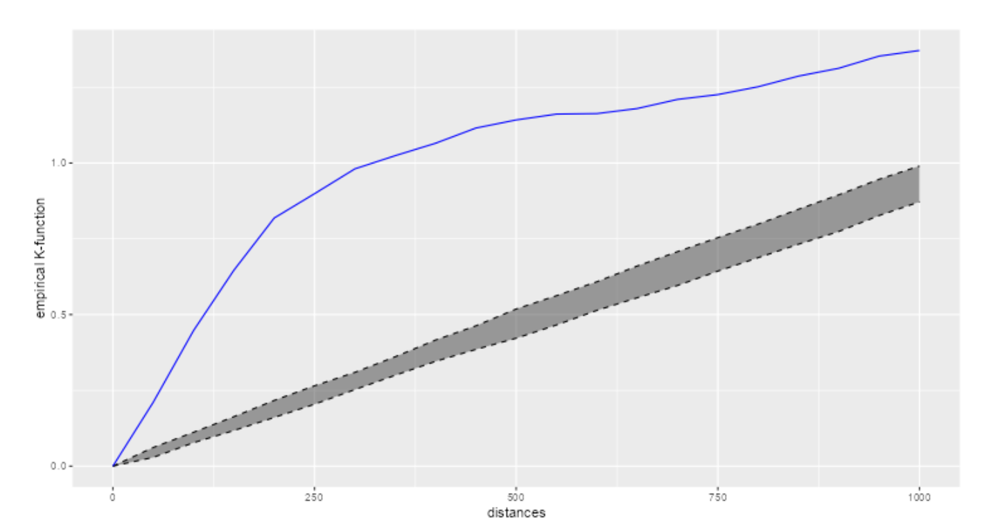
Sembawang:
The blue line is a lot higher than the grey area from around 100m to 600m. Thus, we can interpret that the HDB points are more clustered at that distance than what is expected from a random distribution.
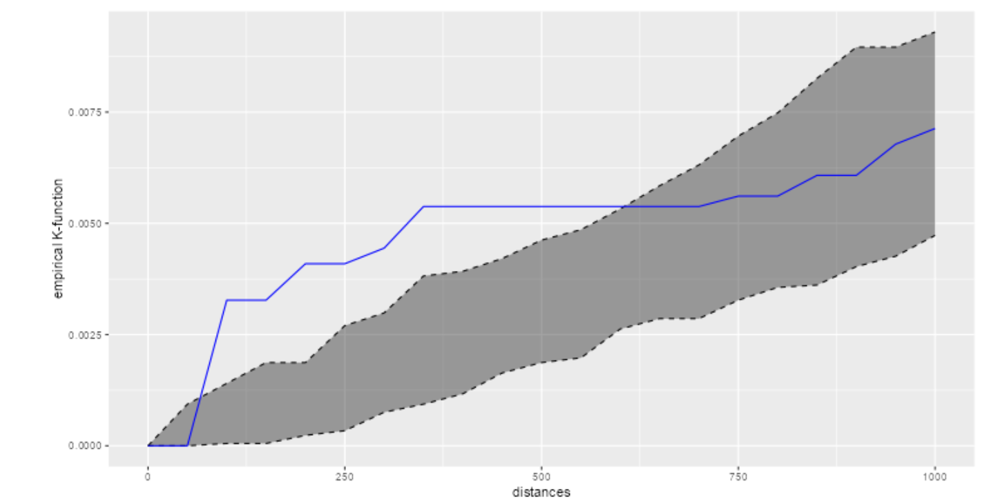
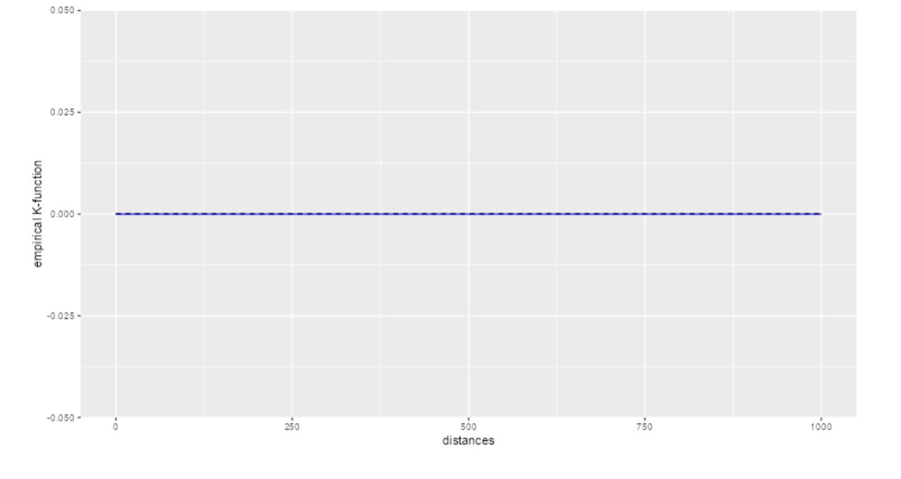
When we deployed our Shiny app, we realized that it was using too much memory, which caused performance issues. As a result, we had to find a solution that would allow us to display the images in the app without actually computing them in real-time. To achieve this, we had to generate the images beforehand and then render them in the app.
For example, in the case of the CLQ map, we had to modify our code to generate the plot as an image file and save it to disk. Then, we used the renderImage() function in Shiny to display the image in the app. This approach helped us reduce the memory usage of the app and improve its performance.
Here’s an example of the modified code:
output$clq_outputmap <- renderImage({
filename <- normalizePath(file.path('./images',
paste(input$clq_amenities, '.PNG', sep='')))
# Return a list containing the filename and alt text
list(src = filename,
width = "80%",
height = "auto")
}, deleteFile = FALSE
)This article highlights that the MEPHAS tool has been designed to support various statistical analyses, including probability, hypothesis testing, regression modeling, and dimensional analysis. Each design interface contains multiple tabs for different analysis methods, an input panel on the left, and an output panel on the right. MEPHAS also allows for data input, parameter configuration, and result output.
We plan to follow and utilise a similar design of the MEPHAS tool, making it a useful template for structuring our HDB app. We will be including navigation bar/tab panels to allow users to switch between the different spatial point analysis tools and implementing a side panel to allow users customize the visualizations and a main panel to generate the graph outputs.
This article highlights the issue of imbalance in the supply and demand of medical resources in provincial capitals of China and emphasises the need to understand the spatial patterns of medical resources to ensure fair and optimal allocation of limited resources. This article utilises the Localised Colocation Quotient (LCLQ) analysis, which is a technique that measures directional spatial associations and heterogeneity between categorical point data. By employing this method and utilising point of interest (POI) data, the study presents a unique analysis of the spatial patterns and directional spatial associations between six medical resources in Wuhan city.
For our project, we need to first define the two types of features of interest which will be HDB locations and the presence of certain amenities. Some examples are schools, carparks, shopping centres and MRT stations. By comparing the observed and expected frequencies of co-occurrence using the LCLQ, we can determine whether HDB locations and surrounding amenities are spatially associated in a non-random way. This can provide insights into the degree to which the availability of amenities in an area affects HDB locations, and vice versa.
This study applied point pattern analysis (PPA) to investigate the spatial distribution of health care facilities in Shenzhen, China. Traditional PPA methods assume that spatial events are randomly located on a plane, but this is not appropriate for network-constrained events, such as those that occur on urban road networks. Therefore, the study used network-based analysis methods, such as network Kernel density estimation and network K-function.
We plan to utilise the netKDE techniques employed in the article to estimate the density of events, such as the density of HDB locations, within a network-constrained environment. The purpose of using netKDE for HDB locations is to identify areas of high or low concentration of HDB units based on their proximity to the road network. With this analysis, HDB buyers can understand the density of HDB units in different regions of Singapore by identifying regions with a high concentration of HDB units, which may be indicative of a high demand for housing in those areas.
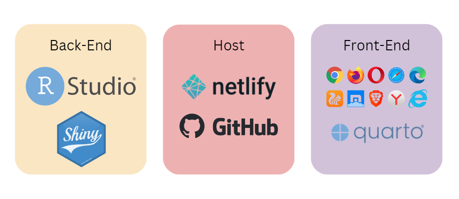
Our Shiny application features a minimalist design, with a clean and modern look achieved through the use of the “minty” bootswatch theme. The layout is simple and intuitive, featuring a navigation bar that provides easy access to various features of the app. Users can explore HDB locations and amenities through a mapping visualization, analyze spatial point patterns with graphs, and even upload their own datasets for further analysis.
To provide a better understanding of our application, below are examples of our application screens. The user guide to our application can be found here.
Homepage
In this page, it introduces the motivation of our application and the authors.
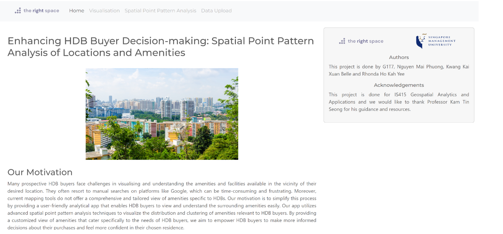
Visualization page
In this page, we can observe the mapping of HDB flats and relevant amenities in Singapore.
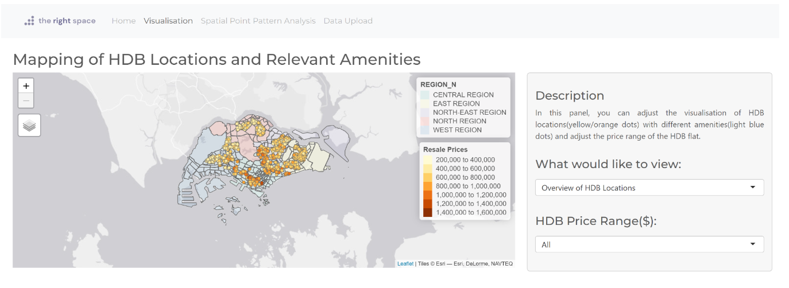
Spatial Point Analysis
In this page, we offer several tools designed to help you analyze the spatial distribution of points in your dataset. Our tools includes the Local Colocation Quotient Analysis (CLQ), Kernel Density Estimation (KDE), F-Function, Ripley L-Function, and Network Constraint Analysis. To access these tools, simply click on the five tabs located at the top of the page. Each tool provides a unique perspective on the spatial patterns in your data, allowing you to gain valuable insights into the underlying processes driving your observations.
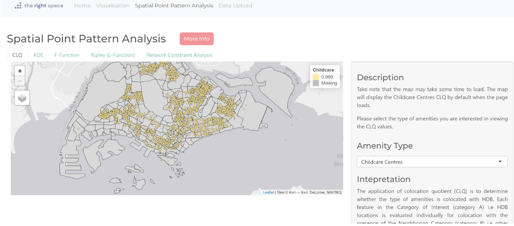
Data Upload
In this page, users can upload their data of an amenity in rds format and it will be shown as an option under the visualisation page, what would you like to view’s drop down list.

To enhance the usefulness of our app, we can integrate hot and cold spot analysis of amenities to identify areas with a high concentration of amenities, known as hot spots, and areas with a low concentration of amenities, known as cold spots. While our current application uses KDE to estimate the density of amenities across an area, hot and cold spot analysis may offer a more intuitive approach to identifying areas with significant clusters of high or low concentrations. By examining the spatial distribution of amenities, we can pinpoint specific areas and provide more targeted information to HDB buyers. This approach may allow us to deliver more actionable insights and help buyers make more informed decisions about their property search.
Currently, our application’s dataset upload function can only upload rds files and is only applicable for visualizations of the map of amenities and HDB locations. To improve the functionality of the app, we can expand the dataset upload function to include other features such as plotting the CLQ maps, KDE, F-function, L-function, and network constraint analysisgraphs. This expansion will allow users to analyze them for deeper insights. Moreover, we can provide additional data pre-processing features to enhance the quality of the dataset uploaded by the user. This ensures that the data is effectively utilized to gain valuable insights and make informed decisions. By offering these advanced features, our application can provide more accurate and relevant information to users and help them make more informed decisions about their property search.
We can also enhance our app by integrating it with APIs (Application Programming Interfaces) that provide real-time location data for amenities such as supermarkets, shopping malls, and hawkers in Singapore. By doing so, our app can obtain the most up-to-date information on the availability and locations of these amenities. This integration will ensure that the information provided by our application is accurate and reliable, which is essential for making informed decisions.
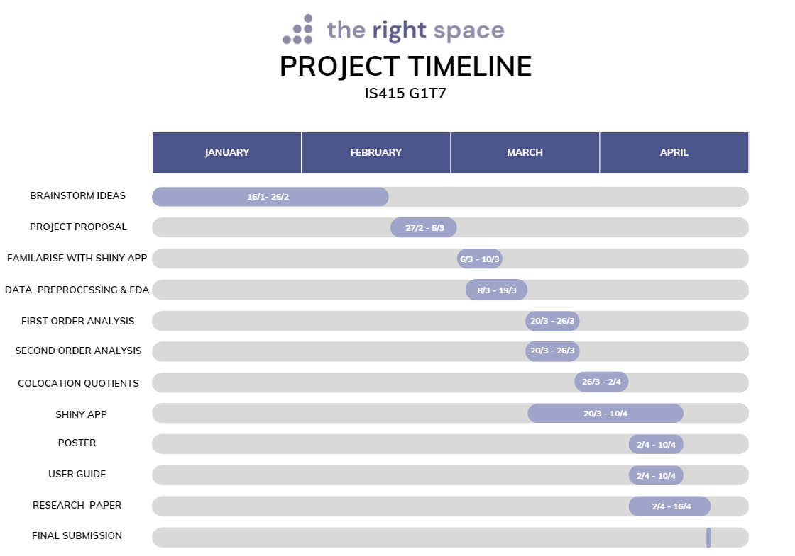
Spatial First Point Analysis (link)
Spatial Second Point Analysis (link)
CLQ Interpretation (link)
Network Constrained Spatial Point Patterns Analysis (link)
Senior’s Interactive L-function code (link)
Shiny Documentation (link)
Literature review No.1 (link)
Literature review No.2 (link)
Literature review No.3 (link)